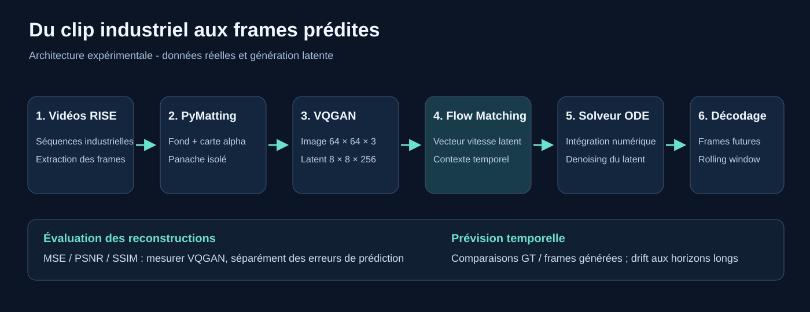
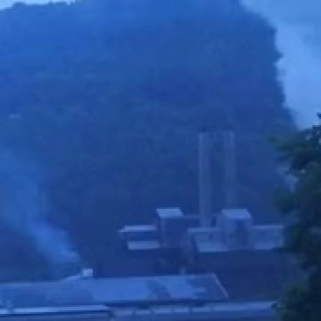
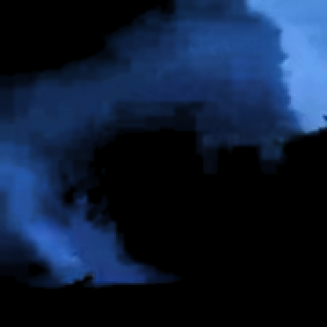
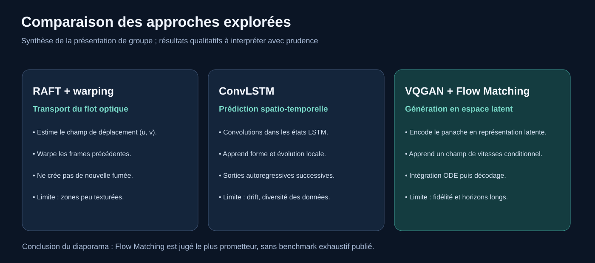
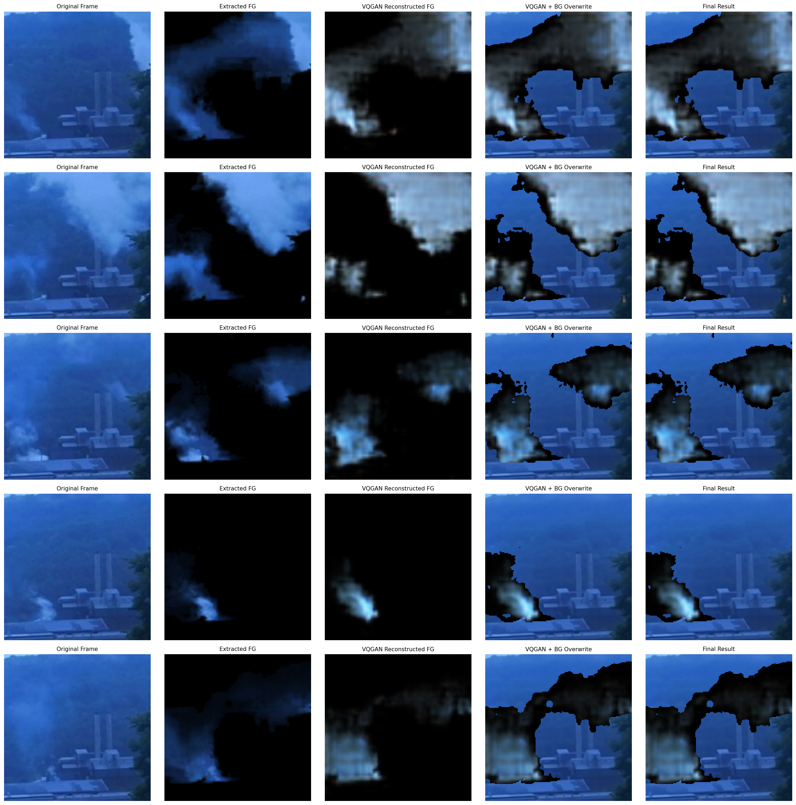
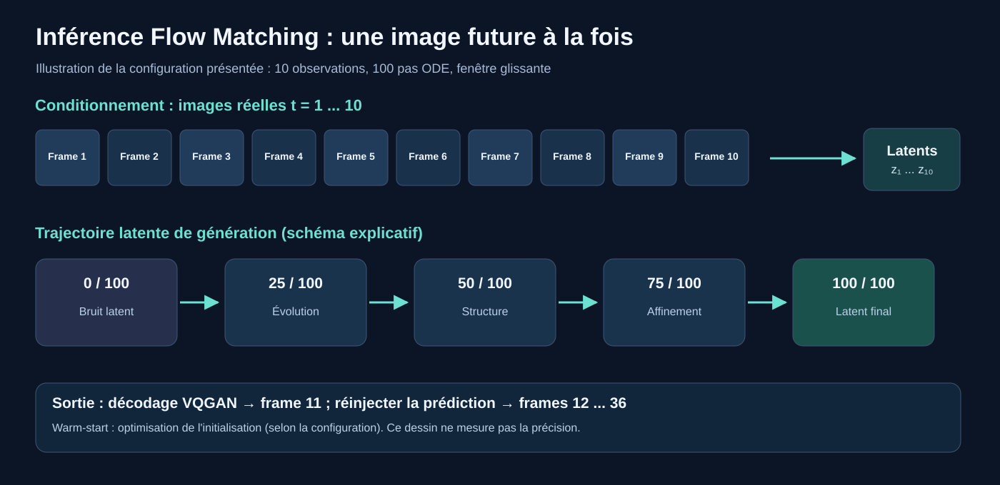
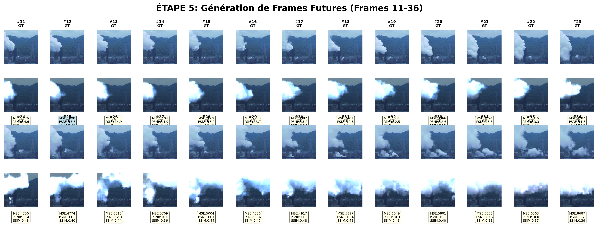
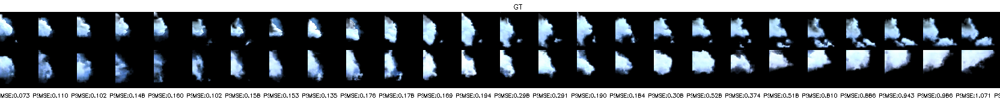

Projet de Master · IA générative & vidéo
Modélisation dynamique de panaches de fumée industriels
De l'acquisition des vidéos au prétraitement par alpha matting, puis à la prédiction de frames futures dans un espace latent VQGAN à l'aide du Flow Matching.
Synthèse web adaptée de la présentation du projet de groupe (24 diapositives) d'Amine Oubaidi, Jérémy Botella et Iskander Hadi. Cette page n'est pas une copie du PDF original.
01 / Contexte
Prévoir une dynamique déformable et stochastique
Un panache de fumée subit une déformation progressive, des déplacements et des apparitions de matière. Un simple déplacement de pixels ne suffit pas à reproduire fidèlement ces phénomènes. L'objectif expérimental est de générer des images futures cohérentes depuis une séquence observée, dans une perspective de surveillance environnementale.

02 / Préparation
Récupération des séquences et extraction des panaches
Le projet s'appuie sur des clips industriels issus de Project RISE. Un script de collecte utilise des métadonnées JSON pour télécharger et découper les séquences. Les frames sont ensuite traitées pour isoler le panache du décor.
Vidéos réelles, points de vue et niveaux d'opacité variables. Les clips source et l'échantillon effectivement exploité pour l'entraînement doivent être distingués.
La composition suit I = αF + (1 − α)B. L'alpha décrit la contribution du premier plan ; les pixels partiellement transparents représentent des frontières de fumée diffuse.


03 / Exploration
Pourquoi ne pas se limiter au flot optique ?

RAFT estime un champ de mouvement dense et permet de déformer une frame passée par warping. Mais la matière réellement nouvelle à la sortie de la cheminée n'est pas générée. ConvLSTM apprend une transition spatio-temporelle supervisée, mais sa génération récurrente peut accumuler des erreurs. Flow Matching a été étudié comme approche générative plus adaptée à l'apparition et à la déformation de la fumée.
04 / Compression spatiale
Encoder avant de modéliser la dynamique
Le VQGAN transforme une frame 64 × 64 × 3 en une grille de caractéristiques 8 × 8 × 256, puis reconstruit une image depuis ce latent. La grille spatiale est plus petite, mais le nombre brut de valeurs n'est pas réduit : 12 288 composantes RGB contre 16 384 valeurs latentes. La représentation n'est donc pas un taux de compression scalaire.

PSNR moyen indiqué pour quatre reconstructions VQGAN de la présentation.
SSIM moyen des mêmes quatre reconstructions. MSE moyen rapporté : 160,7 (échelle de pixels de la figure).
Interprétation : ces métriques décrivent la capacité du VQGAN à reconstruire des images observées. Elles ne mesurent pas la capacité du Flow Matching à prévoir l'avenir.
05 / Génération
Flow Matching conditionnel et intégration ODE
Un champ de vitesses est appris dans l'espace latent pour guider un point de départ bruité vers une représentation plausible de la prochaine frame, conditionné par l'historique observé. L'intégration numérique du champ produit un latent qui est ensuite décodé.

Une initialisation warm-start a aussi été décrite pendant la présentation. Les variantes de conditionnement et les hyperparamètres exacts doivent être reliés au fichier de configuration du run concerné pour garantir la reproductibilité.
06 / Lecture critique
Comparer la prédiction et la vérité terrain
Le comportement doit être évalué frame par frame et sur tout l'horizon autoregressif. Les exemples ci-dessous montrent des différences de géométrie, de position et de texture qui s'accumulent avec le temps : une vidéo plausible ne signifie pas nécessairement une vidéo fidèle à la vérité terrain.


Une capacité à former des panaches et à faire évoluer leur silhouette ; conservation partielle de structures temporelles reconnaissables.
Généralisation sur des vidéos tenues à l'écart, répétabilité, scores agrégés par horizon, comparaison sous protocole identique avec RAFT et ConvLSTM, cohérence temporelle.
Conclusion : le Flow Matching était l'approche jugée la plus encourageante dans la présentation de groupe. Ce constat est expérimental et ne prouve pas une supériorité statistiquement établie sur des tests indépendants.
Ressources
Reproduire et explorer
Projet de groupe : Amine Oubaidi, Jérémy Botella, Iskander Hadi — La Rochelle Université. Ce dossier synthétise la méthodologie et n'est pas un article évalué par les pairs.